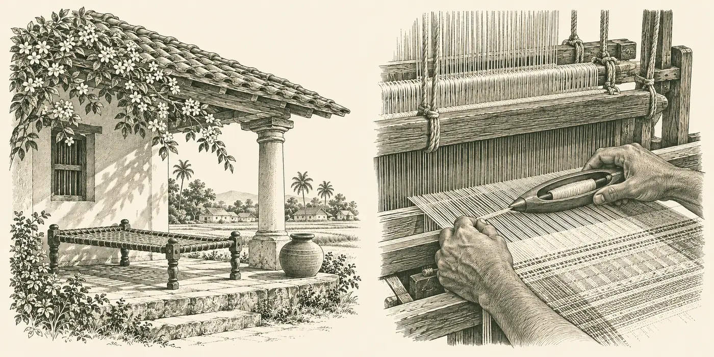
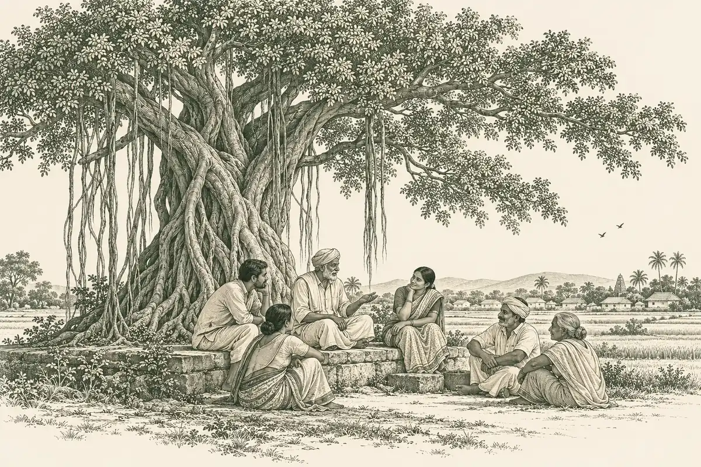

THE EVERYDAY EDIT01

SHIRTS & EVERYDAY LAYERS
Everyday rituals
For slow mornings and the familiar rhythm of a day.
Explore collectionDear friend,
Some of the most meaningful things begin with people coming together. A conversation under a tree. An idea passed from one hand to another.
Pradhan by Panchayat begins with that same belief. We bring village craft to a wider world, and the people behind it a little closer to you.
Through clothing, we hope to keep that exchange alive.

A shared shade. A shared beginning.
ENCLOSED WITH THIS LETTER
Little chapters of everyday life.
Choose one to explore.

SHIRTS & EVERYDAY LAYERS
For slow mornings and the familiar rhythm of a day.
Explore collectionKURTAS & NEHRU JACKETS
For familiar faces, long conversations, and coming home.
Explore collectionCRAFT & THOUGHTFUL GIFTING
For the people, places, and gestures we hold close.
Explore collectionTHE IDEA THAT BRINGS US TOGETHER
For us, the Panchayat is an image of connection: people sitting together, listening, and giving an idea somewhere to grow.
Our letter, our stamps, and our collections all begin here—with the wish to carry something of village life into your everyday.